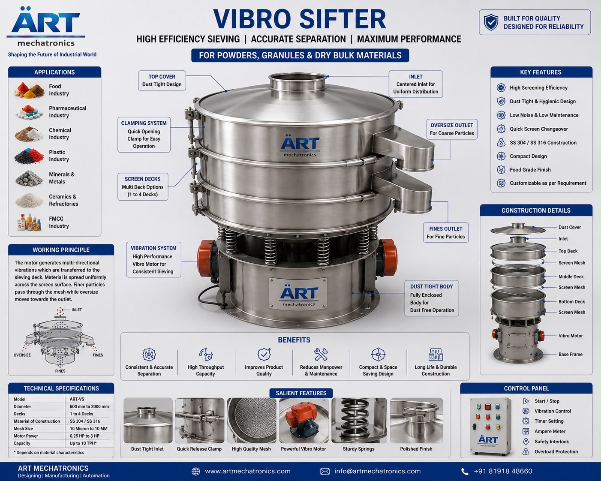

Sifter Machine (Industrial Powder, Granule & Particle Screening System)
A Sifter Machine, also known as an Industrial Sifter, Vibro Sifter, or Powder Screening Machine, is an essential industrial equipment designed for screening, grading, sieving, filtering, and separating powders, granules, particles, and bulk materials based on particle size and purity requirements.

About the Sifter Machine
The machine uses controlled: ✔ Vibratory motion ✔ Mesh screening technology ✔ Particle classification systems ✔ Continuous material flow
to efficiently separate:
Fine particles
Oversized particles
Agglomerates
Foreign impurities
Dust and unwanted materials
Sifter machines are widely used in industries such as:
Food processing
Pharmaceuticals
Chemicals
Spices
Agro products
Minerals
Cosmetics
Paints & coatings
Recycling industries
where accurate particle separation, product purity, and uniform particle size distribution are essential.
The machine is suitable for: ✔ Powder screening ✔ Granule grading ✔ Flour sifting ✔ Spice sieving ✔ Chemical powder separation ✔ Pharmaceutical particle classification
ART Mechatronics offers high-performance industrial sifter machines, engineered for high screening efficiency, hygienic operation, continuous industrial processing, and reliable long-term performance.
Working Principle of Sifter Machine
Powders, granules, particles, or bulk materials are fed onto sifter mesh surface
Vibratory motor generates controlled vibration Material spreads evenly across mesh screen
Creates efficient sifting and separation action
Fine particles pass through mesh openings Oversized particles remain above mesh surface
Vibratory motion ensures smooth and continuous material flow Prevents screen clogging and improves throughput
Multiple decks allow simultaneous separation into different particle sizes
Different grades of material discharged separately through separate outlets
Types of Sifter Machines
- 1. Vibro Sifter Machine
Uses: ✔ Circular vibratory motion ✔ Fine powder screening technology for food, pharma, and chemical industries.
- 2. Rotary Sifter Machine
Uses rotating screening system for: ✔ Continuous bulk material screening
- 3. Multi Deck Sifter Machine
Designed for: ✔ Multi-size grading ✔ Simultaneous particle classification
- 4. Flour Sifter Machine
Specially used for: ✔ Flour purification ✔ Fine food powder screening
- 5. Industrial Powder Sifter
Heavy-duty system suitable for: ✔ Large-scale industrial screening plants
- 6. Liquid Sifter & Filter Machine
Designed for: ✔ Slurry filtration ✔ Wet material separation
Industries Using Sifter Machine
🍃 Food Processing Industry Flour, spice and powder sifting 💊 Pharmaceutical Industry Tablet powder and granule classification ⚗️ Chemical Industry Chemical powder separation 🌶️ Spice Industry Masala grading and impurity removal 🌾 Agro Industry Seed and grain screening ⛏️ Mineral Industry Mineral particle classification 💄 Cosmetic Industry Cosmetic powder screening 💎 FEATURES & ADVANTAGES ✔ High screening and sifting efficiency ✔ Accurate particle size classification ✔ Continuous industrial operation ✔ Multi-deck grading capability ✔ Dust and impurity removal ✔ Low maintenance requirement ✔ Energy-efficient operation ✔ Hygienic and easy-to-clean construction ✔ Suitable for dry and wet material processing
Technical Highlights
Screening Type: Vibratory screening Rotary screening Deck Options: Single deck Double deck Multi deck Construction: Stainless Steel / Mild Steel Mesh Size: Customizable Motor Type: Vibro motor / rotary drive Operation: Manual Semi-automatic Fully automatic
Turnkey Sifting Solutions
ART Mechatronics offers: Complete industrial sifting systems Multi-stage grading solutions Dust collection integration Conveying and handling systems Installation & commissioning After-sales service & AMC
Why Choose Art Mechatronics
Expertise in industrial screening and sifting systems Customized solutions for multiple industries High-performance and durable machine construction Energy-efficient and hygienic designs Proven industrial performance across sectors
Applications
Food Processing Plants Pharmaceutical Manufacturing Units Chemical Processing Industries Spice Manufacturing Facilities Grain & Seed Processing Units Mineral Processing Plants
Call To Action
Looking for a High-Performance Sifter Machine for Industrial Screening & Separation? Connect with our experts for: Powder and granule sifting solutions Particle classification systems Turnkey installation and automation
Request a Quote | Talk to Our Expert
Related Cleaning, Sorting & Grading machines
Get pricing & specs for the Sifter Machine
Tell us your product, capacity and process — our engineers will design a turnkey solution and send a quote. Typical reply within one business day.
One partner, from design to start-up
ART Mechatronics designs, manufactures, installs and commissions your Sifter Machine solution in-house — India · UAE · Thailand.